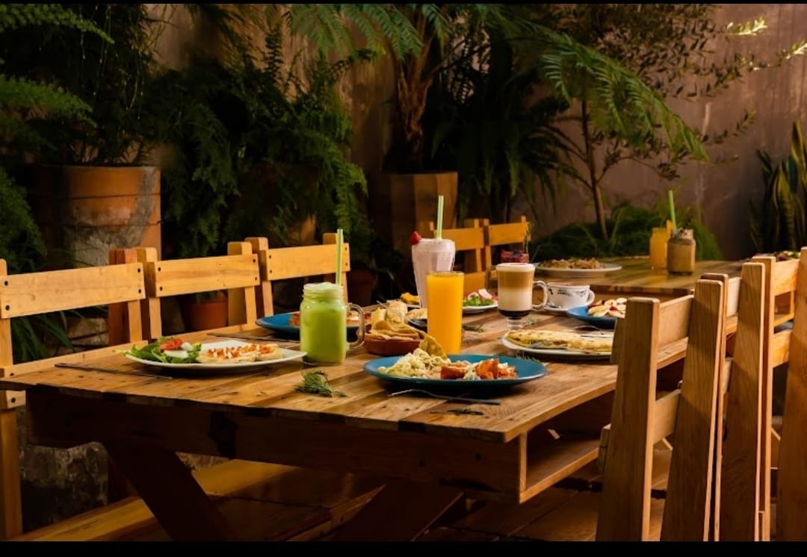
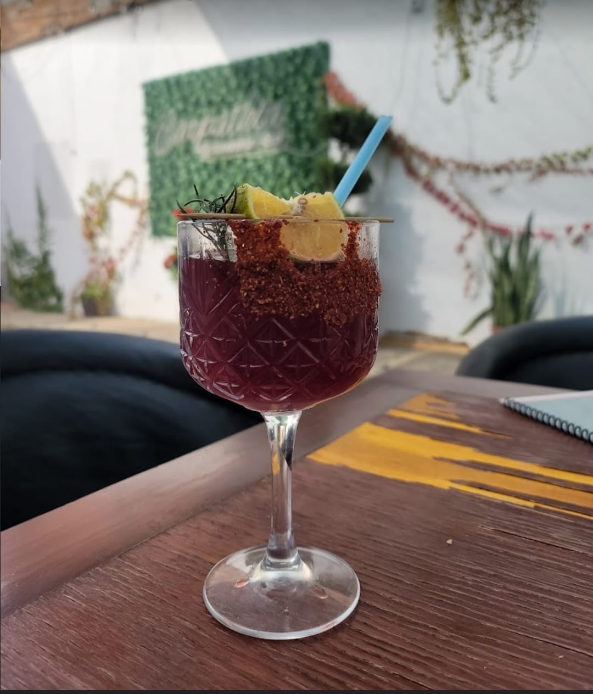
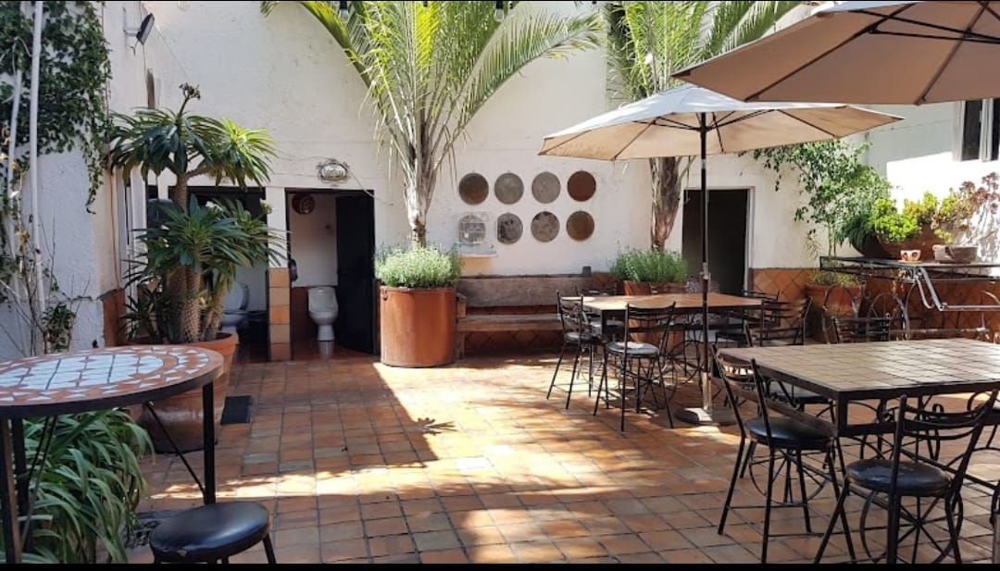
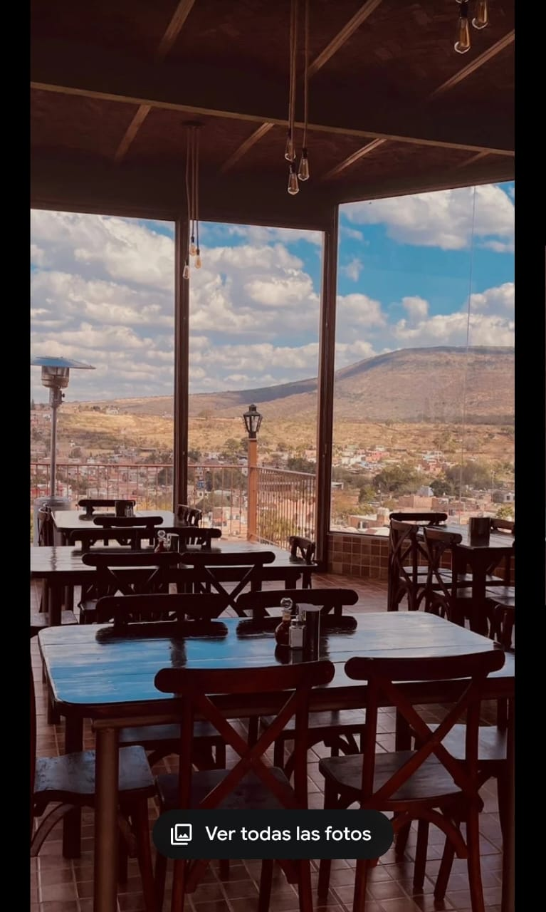
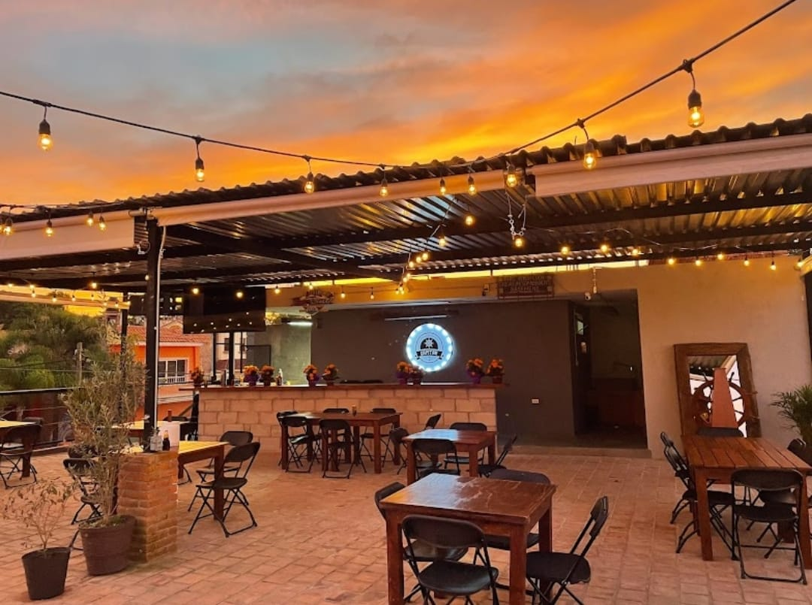
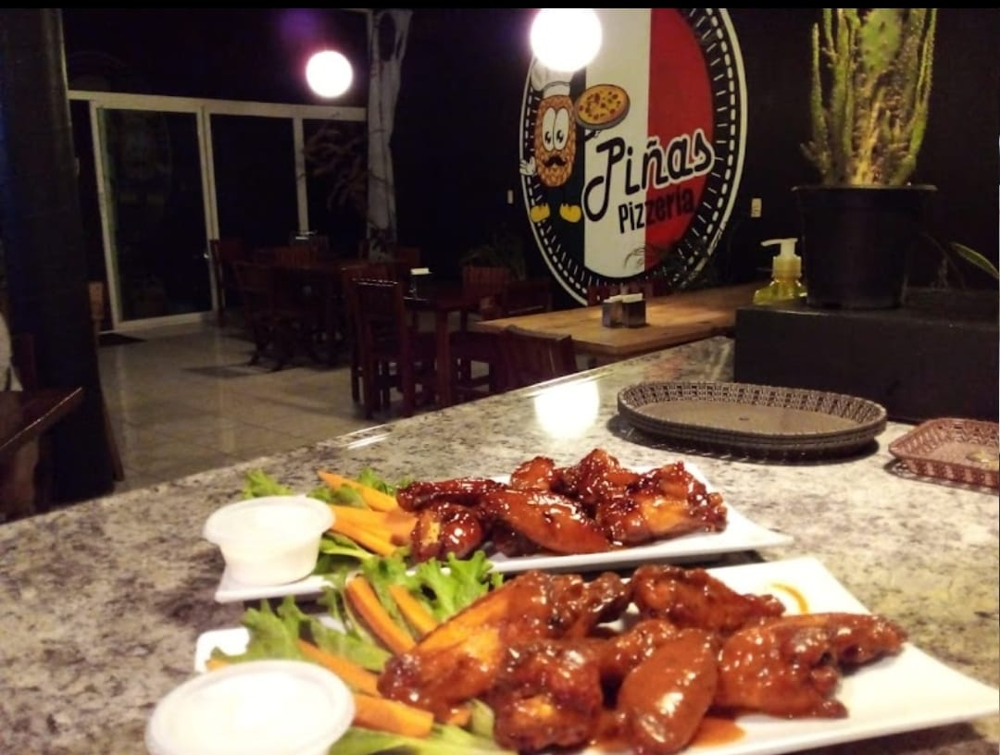

La gastronomía de Cuquío, Jalisco, refleja la riqueza cultural y tradición del pueblo, con sabores auténticos que conquistan tanto a locales como a visitantes.
Entre los platillos más destacados se encuentran la birria de chivo, preparada con recetas heredadas por generaciones, y los tamales de ceniza, únicos por su sabor
y textura especial. También son populares las gorditas de horno, rellenas de chicharrón o frijol, así como los antojitos como sopes, enchiladas y tacos dorados.
Los dulces tradicionales, como el ate de membrillo y las cocadas, completan la experiencia culinaria de este encantador municipio jalisciense. Sin contar los perrones
Tacos que hacen, ya que cuquio es unos de los municipios con los mejores Tacos ala redonda, haciedo mayormente que los turistas visiten nuestro municipio por ellos mismos
EL EDEN:
PLATILLOS:
En el Eden se pueden encontrar platillos como Postres,Desayunos,Bebidas Agradables y demas
en el cual sus platillos tipicos son muy conocidos por sus habitantes y turistas y algunos de ellos son:
-Pasteles
-Malteadas y Frappes
-Lonches y Hamburguesas
Cafes y Bebidas (Bebidas dulces y de todo tipo) etc

CARPATHIA:
PLATILLOS:
El Carpathia es uno de los lugares para comer mas conocidos de Cuquio ya que se encuentra
cerca del centro, y sus platillos son muy conocidos entre sus habitantes y turistas, algunos de ellos son:
-Yakimeshi
-Pan de elote
-Micheladas
-Pasteles y Desayunos
-Malteadas y Bebidas dulces
-Pizza
-Pulpo Zarandeado

GABACHO'S PIZZERIA
PLATILLOS:
Los Gabachos es uno de los restaurantes mas populares ya que todos los habitantes del municipio
lo conocen, y ni se diga de los turistas ya que en los municipios cercanos tambien se encuentran mas de este restaurantes
y algunos de los platillos mas conocidos son:
-Pizzas
-Alitas
-Micheladas
-Pasteles
-Carne Asada
-Bebidas Dulces(Como frappes y Cafes)
-Hamburguesas y demas

CHEF'S RESTAURANTE:
PLATILLOS:
Es un restaurante con un exelente servicio, y comida delicosa, ideal para todo tipo de ocasion
y ademas de contar con areas infantiles y maravillosa vista, algunos de sus platilos son:
-Pizzas
-Mariscos
-Bebidas (Frescas y Dulces como todo tipo de Micheladas y Frappes y Cafes)
Hamburguesas
Snacks

TAQUERIAS MARISCAL Y ZONA:
PLATILLOS:
Las Taquerias en la zona de la Mariscal son muy conocidos por sus chingones tacos de todo tipos
ademas es demasiado conocido por los turistas tanto asi que llegan de las playas de Nayarit, algunos de sus tacos mas famosos son:
-Adobada
-Carnasa
-Pastor
-Lengua
-Cabeza
-Tripa
-Bistec
UBICACION:
Zona centro Arriva del Mercado y cercas de la plaza
EL CAPITAN:
PLATILLOS:
El lugar es agradable, y el servicio es bueno, y la comida es bastante buena, ademas que los postres
son muy conocidos por los lugarenos, algunos de sus platillos mas conocidos son:
-Vacio Black Angus
-Pan de Elote con Helado
-Hamburguesas
-Mariscos de Todo Tipo
-Bebidas como Cervezas
-Postres

PIÑA'S PIZZERIA :
PLATILLOS:
Buena Pizzeria y servicios a domicilio y cuentan con buen lugar de espera y entrag rapida
de los platillos, algunos de sus platillos mas famosos son:
-Pizzas
-Malteadas y Frappes
-Bebidas
-Snacks
-Ensaladas
